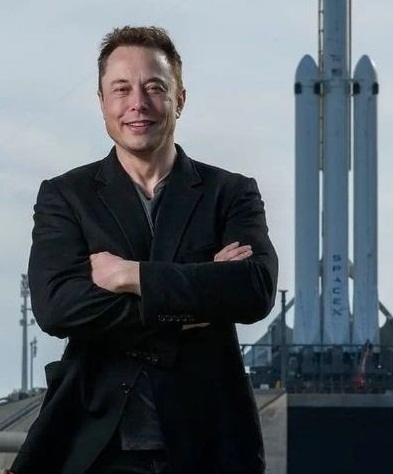
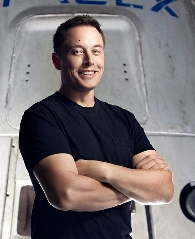
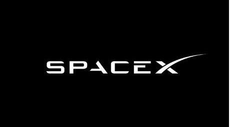

"Failure is an option here. If things are not failing, you are not innovating enough."
~ Elon Musk


Born in Pretoria, South Africa, on June 28, 1971, Elon Musk showed an early interest in computing and
entrepreneurship. After moving to the United States, Musk pursued studies in physics and economics at
the University of Pennsylvania. His vision for a better future has always been driven by his belief in the
power of technology to solve complex problems and push the boundaries of what is possible.
The Birth of SpaceX
Founded in 2002, Space Exploration Technologies Corp., or SpaceX, was born out of Musk's desire to
reduce the cost of space travel and make Mars colonization a reality. The journey of SpaceX has been
marked by numerous milestones, setbacks, and incredible achievements, all driven by Musk's relentless
pursuit of innovation.

Achievements and Milestones
SpaceX's achievements have had a profound impact on the space industry, inspiring a new generation of space enthusiasts and entrepreneurs. By significantly lowering the cost of access to space, SpaceX has opened up new possibilities for scientific research, satellite deployment, and space tourism.
FALCON 1 AND
FALCON 9
>>In 2008, SpaceX made history with the Falcon 1, the first privately developed liquid-fueled rocket to reach orbit.The Falcon 9, first launched in 2010, has become the workhorse of SpaceX, known for its reliability and reusability.
THE
DRAGON SPACECRAFT
>>The Dragon spacecraft, launched in 2010, was the first commercial spacecraft to deliver cargo to the International Space Station (ISS) and return safely to Earth.
THE
STARSHIP SPACECRAFT
>>Currently under development, the Starship spacecraft aims to enable human exploration of Mars and beyond. With its fully reusable design, Starship promises to be a game-changer in space travel.